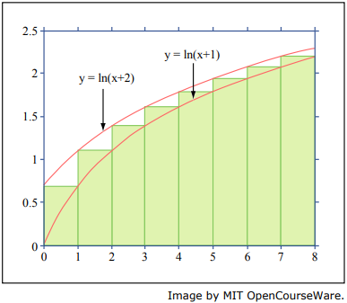

Sums and Asymptotics
Problem 1
Question
Express
\[\sum\limits_{i=0}^{n} i^2 x^i\]
as a closed-form function of n.
First, I tried the perturbation method, by multiplying the original expression by x.
\[ \begin{align}\begin{aligned}\begin{aligned}\\S = \sum\limits_{i=0}^{n} i^2 x^i &= (0^2 \cdot x^0) + (1^2 \cdot x^1) + (2^2 \cdot x^2) + \dots + (n^2 \cdot x^n)\\&= x + 4x^2 + \dots + n^2x^n\\xS &= x^2 + 4x^3 + \dots + (n-1)^2x^n + n^2n^{n+1}\\\end{aligned}\end{aligned}\end{align} \]
The subtracting one from the other gives us;
\[ \begin{align}\begin{aligned}\begin{aligned}\\(1-x)S &= x + 4x^2 + \dots + n^2x^n\\-& \qquad x^2 + 4x^3 + \dots + (n-1)^2x^n + n^2n^{n+1} \cr\\&= x + 3x^2 + 5x^3 + \dots + (n^2x^n - (n-1)^2x^n) - n^2x^{n+1}\\\end{aligned}\end{aligned}\end{align} \]
However, this doesn’t cancel out neatly, so next I tried the differential method;
Starting with the closed form of the sum of increasing exponents (which was proved in the lecture);
\[\sum\limits_{i=0}^{n} x^i = {1 - x^{n+1} \over 1 - x}\]
To get the desired form, we can iteratively take the derivative, then multiply up by x;
\[ \begin{align}\begin{aligned}\begin{aligned}\\{\delta \over \delta x}\left[ \sum\limits_{i=0}^{n} x^i \right] &= \sum\limits_{i=0}^{n} ix^{i-1} \qquad &&\text{power rule} \cr\\x \cdot \sum\limits_{i=0}^{n} ix^{i-1} &= \sum\limits_{i=0}^{n} ix^i \qquad &&\text{multiply by x} \cr\\{\delta \over \delta x}\left[ \sum\limits_{i=0}^{n} ix^i \right] &= \sum\limits_{i=0}^{n} i^2x^{i-1} \qquad &&\text{take deriv again} \cr\\x \cdot \sum\limits_{i=0}^{n} i^2x^{i-1} &= \sum\limits_{i=0}^{n} i^2x^i \qquad &&\text{multiply by x again} \cr\\\end{aligned}\end{aligned}\end{align} \]
If we apply this to the other side of the equation we get;
\[ \begin{align}\begin{aligned}\begin{aligned}\\{\delta \over \delta x}\left[ {1 - x^{n+1} \over 1 - x} \right] &= {\delta \over \delta x}\left[ (1 - x^{n+}) \cdot (1 - x)^{-1} \right]\\\end{aligned}\end{aligned}\end{align} \]
By separating the terms and applying the product rule we get two functions of x,
of which we can find their derivatives;
\[ \begin{align}\begin{aligned}\begin{aligned}\\g(x) &= 1 - x^{n+1}\\g'(x) &= {\delta \over \delta x}\left[ 1 \right] - {\delta \over \delta x}\left[ x^{n+1} \right]\\&= 0 - (n+1)x^n\\h(x) &= (1 - x)^{-1}\\&\text{this require u substitution,}\\u &= 1 - x\\{\delta \over \delta x}\left[ 1 - x \right] &= {\delta \over \delta x}\left[ 1 \right] - {\delta \over \delta x}\left[ x \right]\\&= 0 - 1\\\delta u &= - \delta x\\h(x) &= u^{-1}\\h'(x) &= - {\delta \over \delta u}\left[ u^{-1} \right]\\&= - (- u ^ {-2})\\&= (1 - x)^{-2}\\\end{aligned}\end{aligned}\end{align} \]
We can then apply the product rule to finish the first closed form,
\[ \begin{align}\begin{aligned}\begin{aligned}\\{\delta \over \delta x}\left[ (1 - x^{n+1}) \cdot (1 - x)^{-1} \right] &= -(n+1)x^n \cdot (1 - x)^{-1} + (1 - x^{n+1}) \cdot (1-x)^{-2}\\&= {-(n+1)x^n \over 1 - x} + {1 - x^{n+1} \over (1 - x)^ 2}\\&= {-(1-x)(n+1)x^n \over (1 - x)^{-2}} + {1 - x^{n+1} \over (1 - x)^ 2}\\&= {-(1-x)(n+1)x^n + 1 - x^{n+1} \over (1 - x)^2}\\&= {-((n+1)x^n - (n+1)x^{n+1}) + 1 - x^{n+1} \over (1 - x)^2}\\&= {1 - (n+1)x^n + nx^{n+1} \over (1 - x)^2}\\\end{aligned}\end{aligned}\end{align} \]
Then we need to multiply by x to get,
\[i(x) = {x - (n+1)x^{n+1} + nx^{n+2} \over (1 - x)^2}\]
Now we need to take the derivative again,
\[ \begin{align}\begin{aligned}\begin{aligned}\\j(x) &= x - (n+1)x^{n+1} + nx^{n+2}\\j'(x) &= {\delta \over \delta x}\left[ x \right] - {\delta \over \delta x}\left[ (n+1)x^{n+1} \right] + {\delta \over \delta x}\left[ nx^{n+2} \right]
\cr \cr\\&\text{first term is trivial}\\{\delta \over \delta x}\left[ x \right] &= 1
\cr \cr\\&\text{second term requires applying the power rule}\\k(x) &= (n+1)x^{n+1}\\&l(x) = n + 1 \qquad l'(x) = 0\\&m(x) = x^{n+1} \qquad m'(x) = (n+1)x^n\\k'(x) &= 0 \cdot x^{n+1} + (n+1) \cdot (n+1)x^n\\&= (n+1)^2x^n
\cr \cr\\&\text{third term also requires applying power rule}\\o(x) &= nx^{n+2}\\&p(x) = n \qquad p'(x) = 0\\&q(x) = x^{n+2} \qquad q'(x) = (n+2)x^{n+1}\\o'(x) &= 0 \cdot x^{n+2} + n \cdot (n+2)x^{n+1}\\&= (n^2 + 2n)x^{n+1}
\cr \cr\\&\text{now we can put it all together}\\j'(x) &= 1 - (n+1)^2x^n + (n^2 + 2n)x^{n+1}
\cr \cr\\&\text{now we work out the derivative of the second term of i'(x)}\\r(x) &= (1 - x)^{-2}\\&u = 1 - x \qquad \delta u = - \delta x\\r'(x) &= 2(1-x)^{-3}
\cr \cr\\&\text{and now finally we can apply the power rule to get i'(x)}\\i'(x) &= j'(x) \cdot r(x) + j(x) \cdot r'(x)
\cr\\&= (1 - (n+1)^2x^n + (n^2 + 2n)x^{n+1}) \cdot (1 - x)^{-2} + (x - (n+1)x^{n+1} + nx^{n+2}) \cdot 2(1-x)^{-3}
\cr\\&= {(1 - (n+1)^2x^n + (n^2 + 2n)x^{n+1})(1 - x) \over (1 - x)^3} + {2(x - (n+1)x^{n+1} + nx^{n+2}) \over (1 - x)^3}
\cr\\&= {(1 - (n+1)^2x^n + (n^2 + 2n)x^{n+1}) - (x - (n+1)^2x^{n+1} + (n^2 + 2n)x^{n+2}) + (2x - 2(n+1)x^{n+1} + 2nx^{n+2}) \over (1 - x)^3}
\cr\\&= {1 + x - (n+1)^2x^n + (2n^2 + 2n - 1)x^{n+1} - n^2x^{n+2} \over (1 - x)^3}\\\end{aligned}\end{aligned}\end{align} \]
Finally, multiply up by x one last time to get the end result
\[ \begin{align}\begin{aligned}\begin{aligned}\\\sum\limits_{i=0}^{n} i^2x^i &= x \cdot i'(x)
\cr\\&= \boxed{{x + x^2 - (n+1)^2x^{n+1} + (2n^2 + 2n - 1)x^{n+2} - n^2x^{n+3} \over (1 - x)^3}}\\\end{aligned}\end{aligned}\end{align} \]
Problem 2
(a)
What is the product of the first n odd powers of two: \(\prod\limits_{k=1}^{n} 2^{2k-1}\)
\[ \begin{align}\begin{aligned}\begin{aligned}\\\prod\limits_{k=1}^{n} 2^{2k-1} &= 2^1 \cdot 2^3 + \dots \cdot 2^{2n-1}\\&= 2^{\sum\limits_{j=1}^{n} 2j - 1}\\&= 2^{\sum\limits_{i=1}^{2n - 1} \left[ i \right] - \sum\limits_{h=1}^{n - 1} \left[ 2h \right]}\\&= 2^{{(2n - 1)2n \over 2} - 2({(n-1)n \over 2})}\\&= 2^{4n^2 - 2n - 2(n^2 - n) \over 2}\\&= 2^{2n^2 \over 2}\\&= 2^{n^2}\\\end{aligned}\end{aligned}\end{align} \]
(b)
Find a closed expression for
\[\sum\limits_{i=0}^{n} \sum\limits_{j=0}^{m} 3^{i+j}\]
We already know the closed form of the sum of increasing exponents;
\[\sum\limits_{i=0}^{n} x^i = {1-x^{n+1} \over 1 - x}\]
We can use this to solve the closed form,
\[ \begin{align}\begin{aligned}\begin{aligned}\\\sum\limits_{i=0}^{n} \sum\limits_{j=0}^{m} 3^{i+j} &=
\sum\limits_{i=0}^{n} \left[ 3^i \cdot {1 - 3^{m+1} \over 1 - 3} \right]
\qquad && \text{apply sum of increasing exponents formula to inner sum}\\&= {1 - 3^{m+1} \over 1 - 3} \cdot \sum\limits_{i=0}^{n} 3^i
\qquad && \text{closed sum is no longer bound to i}\\&= {1 - 3^{m+1} \over 1 - 3} \cdot {1 - 3^{n+1} \over 1 - 3}
\qquad && \text{apply the SIE formula again}\\&= {1 - 3^{n+1} - 3^{m+1} + 3^{n+m+2} \over 4}
\qquad && \text{tidy up}\\\end{aligned}\end{aligned}\end{align} \]
(c)
Find a closed expression for
\[\sum\limits_{i}^{n} \sum\limits_{j}^{n} (i + j)\]
We already know the sum of incrementing integers,
\[\sum\limits_{i=1}^n i = {n(n+1) \over 2}\]
We can apply this first to the innner sum, then work outwards;
\[ \begin{align}\begin{aligned}\begin{aligned}\\\sum\limits_{i}^{n} \sum\limits_{j}^{n} (i + j) &= \sum\limits_{i=1}^{n} \left[ in + {n(n+1) \over 2}\right]\\&= n({n(n+1) \over 2}) + \sum\limits_{i=1}^n in\\&= {n^3 + n^2 \over 2} + {n^3 + n^2 \over 2}\\&= n^3 + n^2\\\end{aligned}\end{aligned}\end{align} \]
(d)
Find a closed expression for
\[\prod\limits_{i=1}^n \prod\limits_{j=1}^n 2^i \cdot 3^j\]
\[ \begin{align}\begin{aligned}\begin{aligned}\\\prod\limits_{i=1}^n \prod\limits_{j=1}^n 2^i \cdot 3^j &=
\prod\limits_{i=1}^n \left[ 2^{ni} \cdot \prod\limits_{j=1}^n 3^j \right]
\cr\\&= \prod\limits_{i=1}^n \left[ 2^{ni} \cdot 3^{n(n+1) \over 2} \right]
\cr\\&= \prod\limits_{i=1}^n \left[ 2^{ni} \right] \cdot (3^{n(n+1) \over 2})^n
\cr\\&= 2^{\sum\limits_{i=1}^n ni} \cdot 3^{n^3 + n^2 \over 2}
\cr\\&= 2^{n({n(n+1) \over 2})} \cdot 3^{n^3 + n^2 \over 2}
\cr\\&= 2^{n^3 + n^2 \over 2} \cdot 3^{n^3 + n^2 \over 2}\\\end{aligned}\end{aligned}\end{align} \]
Problem 3
(a)
Use integration to find upper and lower bounds that differ by at most 0.1 for the following sum.
(You may need to add the first few terms explicitly and then use integrals to bound the sum of the remaining terms.)
\[\sum\limits_{i=1}^{\infty} {1 \over (2i + 1)^2}\]
First we can find the limit as the function approaches infinity;
\[\lim\limits_{n \rightarrow \infty} {1 \over (2n + 1)^2} = 0\]
Since the function is decreasing and converges at zero, we can apply the following bounds,
\[f(\infty) + \int_1^\infty f(x)\delta x \le \sum\limits_{i=1}^{\infty} {1 \over (2i + 1)^2} \le f(1) + \int_1^\infty f(x)\delta x\]
We know \(f(\infty)\) approaches zero so this term is insignificant.
We can also trivially solve \(f(1) = {1 \over 9}\).
We can then solve the integral to get our bounds,
\[ \begin{align}\begin{aligned}\begin{aligned}\\\int_1^\infty {1 \over (2x + 1)^2} \delta x & \qquad \text{requires u-substitution}
\cr\\u = 2x + 1 & \qquad \delta u = 2 \delta x
\cr\\&= {1 \over 2} \left( \int_9^\infty u^{-2} \delta u \right)
\cr\\&= {1 \over 2} \left( {-1 \over u} \Bigm|_9^\infty \right)
\cr\\&= {1 \over 2}\left( {-1 \over \infty} - {-1 \over 9} \right)
\cr\\&= {1 \over 2} \left( {1 \over 9} \right)
\cr\\&= {1 \over 18}\\\end{aligned}\end{aligned}\end{align} \]
So our bounds are,
\[{1 \over 18} \le \sum\limits_{i=1}^{\infty} {1 \over (2i + 1)^2} \le {1 \over 18} + {1 \over 9}\]
However, since the bounds differ by \(1 \over 9\), this is not accurate enough.
We can reduce the error by increasing the lower bound;
\[f(1) + \int_2^\infty f(x)\delta x \le f(1) + \sum\limits_{i=2}^{\infty} {1 \over (2i + 1)^2} \le f(1) + f(2) + \int_2^\infty f(x)\delta x\]
Again, we can calculate the integral to determine our error,
\[ \begin{align}\begin{aligned}\begin{aligned}\\\int_2^\infty f(x)\delta x &= \int_2^\infty {1 \over (2x + 1)^2} \delta x
\cr\\u = 2x + 1 & \qquad \delta u = 2 \delta x
\cr\\&= {1 \over 2} \left( \int_25^\infty u^{-2} \delta u \right)
\cr\\&= {1 \over 2} \left( {-1 \over u} \Bigm|_25^\infty \right)
\cr\\&= {1 \over 2}\left( {-1 \over \infty} - {-1 \over 25} \right)
\cr\\&= {1 \over 2} \left( {1 \over 25} \right)
\cr\\&= {1 \over 50}\\\end{aligned}\end{aligned}\end{align} \]
This gives us the following bounds,
\[ \begin{align}\begin{aligned}{1 \over 9} + {1 \over 50} \le \sum\limits_{i=1}^{\infty} {1 \over (2i + 1)^2} \le {1 \over 9} + {1 \over 25} + {1 \over 50}
\cr\\{59 \over 450} \le \sum\limits_{i=1}^{\infty} {1 \over (2i + 1)^2} \le {59 \over 450} + {1 \over 25}\end{aligned}\end{align} \]
This gives us an error of only \({1 \over 25}\) and so solves the question.
(b)
Assume \(n\) is an integer larger than 1.
Which of the following inequalities, if any, hold?
You may find the graph helpful.

\(\sum\limits_{i=1}^n \ln(i+1) \le \int_0^n \ln(x+2)\delta x\)
\(\sum\limits_{i=1}^n \ln(i+1) \le \ln 2 + \int_1^n \ln(x+1)\delta x\)
The first inequality is true, because \(\ln(x + 2)\) defines the left Riemann sum of the summed terms,
and since this function is increasing, that defines the upper bound.
The second inequality is false, because \(\ln(x+1)\) defines the right Riemann sum of the summed terms,
and since this function is increasing that defines the lower bound.
This can be easily verified by calculating where \(n=2\).
\[ \begin{align}\begin{aligned}\begin{aligned}\\\sum\limits_{i=1}^2 \ln(i+1) &\cancel{\le} \ln 2 + \int_1^2 \ln(x+1)\delta x\\1.79... &\cancel{\le} 0.69... + (3 \ln 3 - 3) - (2 \ln 2 - 2)\\1.79... &\cancel{\le} 1.60...\\\end{aligned}\end{aligned}\end{align} \]
Problem 4
Bug
There is a bug on the edge of a 1-meter rug.
The bug wants to cross to the other side of the rug.
It crawls at 1 cm per second.
However, at the end of each second, a malicious first-grader named Mildred Anderson stretches the rug by 1 meter.
Assume that her action is instantaneous and the rug stretches uniformly.
Thus, here’s what happens in the first few seconds:
The bug walks 1 cm in the first second, so 99 cm remain ahead.
Mildred stretches the rug by 1 meter, which doubles its length.
So now there are 2 cm behind the bug and 198 cm ahead.
The bug walks another 1 cm in the next second, leaving 3 cm behind and 197 cm ahead.
Then Mildred strikes, stretching the rug from 2 meters to 3 meters.
So there are now \(3 \cdot {3 \over 2} = 4.5\) cm behind the bug and \(197 \cdot {3 \over 2} = 295.5\) cm ahead.
The bug walks another 1 cm in the third second, and so on.
Your job is to determine this poor bug’s fate.
After the bug walks for the first time, it has travelled \({1 \over 100}\) of the rug.
After it gets stretched by 1 metre, the bug has now travelled \({2 \over 200}\) of the rug,
but as a proportion of the rug travelled, the fraction remains the same, simplifying down to \({1 \over 100}\).
The second time around, the bug travels \({1 \over 200}\) of the rug,
since it travels at a constant 1cm per iteration, and the rug is now 200cm long.
If we add this to the distance already travelled we get \({1 \over 100} + {1 \over 200} = {3 \over 200}\).
The sum for the distance travelled after n steps can be written like this,
\[\sum\limits_{i=1}^n {1 \over 100i}\]
Since the \({1 \over 100}\) is a constant, this can be extracted, so we get;
\[ \begin{align}\begin{aligned}{1 \over 100} \cdot \sum\limits_{i=1}^n {1 \over i}\\{1 \over 100} \cdot H_n\end{aligned}\end{align} \]
There is no closed form for the Harmonic Sum, however, since it is a decreasing sum, we can apply integration bounds to it,
\[{1 \over n} + \int_1^n ({1 \over n}) \le H_n \le {1 \over 1} + \int_1^n ({1 \over n})\]
Solving the integral we get \(\ln n\), which we can add back to equation to get the following bounds,
\[{1 \over 100} \cdot \left( {1 \over n} + \ln n \right)
\le \sum\limits_{i=1}^n {1 \over 100i}
\le {1 \over 100} \cdot \left( 1 + \ln n \right)\]
When the sum is greater than 1, it represents the bug finally reaching the end of the rug.
We can solve this for the upper limit,
\[ \begin{align}\begin{aligned}1 = {1 \over 100} \left( 1 + \ln n \right)\\100 = 1 + \ln n\\99 = \ln n\\n = e^{99}\end{aligned}\end{align} \]
That is to say, it will take no more than \(e^{99}\) steps for the bug to reach the end of the rug (!).
Problem 5
Question
For each of the following six pairs of functions f and g (parts (i) through (vi)),
state which of these order-of-growth relations hold (more than one may hold, or none may hold):
\[f = o(g) \qquad f = O(g) \qquad f = \omega(g) \qquad f = \Omega(g) \qquad \Theta(g) \qquad f \thicksim g\]
(a)
\[f(n) = \log_2 n \qquad g(n) = \log_10 n\]
From our log properties we know that \(\log_x a = {\ln a \over \ln x}\), so
\[ \begin{align}\begin{aligned}\begin{aligned}\\\lim_{x \rightarrow \infty} \left| {\log_2 n \over \log_10 n} \right| &= \lim_{x \rightarrow \infty} \left| {{\ln \infty \over \ln 2} \over { \ln \infty \over \ln 10}} \right|
\cr\\&= \lim_{x \rightarrow \infty} \left| {\ln 10 \cdot \ln \infty \over \ln 2 \cdot \ln \infty} \right|
\cr\\&= {\ln 10 \over \ln 2} \cdot \lim_{x \rightarrow \infty} \left| {\ln \infty \over \ln \infty} \right|
\cr\\&= \log_2 10 \cdot 1
\cr\\&= 3.321..\\\end{aligned}\end{aligned}\end{align} \]
For \(f = o(g)\) to be true we must prove,
\[f = o(g) \Rightarrow \lim_{x \rightarrow \infty} \left| {\log_2 n \over \log_10 n} \right| = 0\]
Since the limit does not equal zero, \(f = o(g)\) does not hold.
For \(f = O(g)\) to be true we must prove,
\[f = O(g) \Rightarrow \lim_{x \rightarrow \infty} \left| {\log_2 n \over \log_10 n} \right| < \infty\]
Since the limit is \(\log_2 10\), which is less than infinity, so \(f = O(g)\) holds.
For \(f = \omega(g)\) to be true we must prove,
\[f = \omega(g) \Rightarrow \lim_{x \rightarrow \infty} \left| {\log_2 n \over \log_10 n} \right| = \infty\]
The limit does not equal infinity, so \(f = \omega(g)\) does not hold.
For \(f = \Omega(g)\) to be true, we must prove,
\[f = \Omega(g) \Rightarrow \lim_{x \rightarrow \infty} \left| {\log_2 n \over \log_10 n} \right| > 0\]
Since \(\log_2 10 > 0\), \(f = \Omega(g)\) is true.
For \(f = \Theta(g)\) to be true we must prove,
\[f = \Theta(g) \Rightarrow 0 < \lim_{x \rightarrow \infty} \left| {\log_2 n \over \log_10 n} \right| < \infty\]
Since \(0 < \log_2 10 < \infty\), then \(f = \Theta(g)\) holds.
For \(f \thicksim g\) to be true, we must prove,
\[f \thicksim g \Rightarrow \lim_{x \rightarrow \infty} \left| {\log_2 n \over \log_10 n} \right| = 1\]
Since \(\log_2 10\) does not equal 1, this is not true.
(b)
\[f(n) = 2^n \qquad g(n) = 10^n\]
First we calculate the limit,
\[ \begin{align}\begin{aligned}\begin{aligned}\\\lim_{x \rightarrow \infty} \left| {2^x \over 10^x} \right| &= \lim_{x \rightarrow \infty} \left| {\cancel{2^x} \over \cancel{2^x} \cdot 5^x} \right|\\&= 0\\\end{aligned}\end{aligned}\end{align} \]
\(f = o(g)\) holds, because the limit is equal to zero.
\(f = O(g)\) holds too, because zero is less than infinity.
\(f = \omega(g)\) does not hold, because the limit is not infinity.
\(f = \Omega(g)\) does not hold, because the limit is zero, (as opposed to greater than zero).
\(f = \Theta(g)\) does not hold because \(0 < limit < \infty\) is not true when the limit is zero.
\(f \thicksim g\) does not hold because the limit does not equal 1.
(c)
\[f(n) = 0 \qquad g(n) = 17\]
First we calculate the limit,
\[\lim_{x \rightarrow \infty} \left| {0 \over 17} \right| = 0\]
\(f = o(g)\) holds, which makes sense because 17 is larger than zero.
\(f = O(g)\) holds, which also makes sense because 17 is larger than zero by a fixed amount.
\(f = \omega(g)\) does not hold, because zero cannot not be larger than 17.
\(f = \Omega(g)\) does not hold either for the same reason.
\(f = \Theta(g)\) does not hold, because f is zero for any value of n, so f cannot grow at a fixed rate relative to g, because f does not grow.
\(f \thicksim g\) does not hold, because f does not grow exactly as fast as g.
(d)
\[f(n) = 1 + cos({\pi n \over 2}) \qquad g(n) = 1 + sin({\pi n \over 2})\]
First we must take the limit. However, since \(sin({\pi x \over 2})\) oscillates between -1 and 1,
the limit does not exist, so we must take the limit superior.
\[ \begin{align}\begin{aligned}\begin{aligned}\\\limsup_{x \rightarrow \infty} \left| {1 + cos({\pi n \over 2}) \over 1 + sin({\pi n \over 2})} \right| &= \limsup_{z \rightarrow \infty} \left| {1 + 1 \over 1 + 1} \right|\\&= 1\\\end{aligned}\end{aligned}\end{align} \]
\(f = o(g)\) is not true, since the limit is not zero.
\(f = O(g)\) is true, since the limit is less than \(\infty\).
\(f = \omega(g)\) is not true, since the limit is not equal to \(\infty\).
\(f = \Omega(g)\) is true, because the limit is greater than zero.
\(f = \Theta(g)\) is true, because the limit is between zero and infinity.
\(f \thicksim g\) is true because the limit is exactly 1.
(e)
\[f(n) = 1.0000000001^n \qquad g(n) = n^{10000000000}\]
Since we know any exponential grows faster than any polynomial, we know the reverse,
\[\lim_{n \rightarrow \infty} \left| {a^n \over n^b} \right| = \infty\]
where a and b are both greater than 1, which is true in our case.
\(f = o(g)\) is not true, because the limit is not zero.
\(f = O(g)\) is also not true, because the limit is \(\infty\), which is not less than infinity.
\(f = \omega(g)\) is true, because the limit is equal to infinity.
\(f = \Omega(g)\) is also true because infinity is greater than zero.
\(f = \Theta(g)\) is not true because the limit is not between zero and infinity.
\(f \thicksim g\) is not true because the limit is not equal to 1.
Problem 6
Question
This problem continue the study of asymptotics of factorials.
(a)
Either prover or disprove each of the following statements.
If we let \(f(x) = x!\) and \(g(x) = (x+1)!\) then we can calculate the limit
\[ \begin{align}\begin{aligned}\begin{aligned}\\\lim_{x \rightarrow \infty} \left| {x! \over (x+1)!} \right| &=
\lim_{x \rightarrow \infty} \left|
{(\cancel{1} \cdot \cancel{2} \cdot \dots \cdot \cancel{n}) \over
(\cancel{1} \cdot \cancel{2} \cdot \dots \cdot \cancel{n} \cdot (n+1))} \right|\\&= \lim_{x \rightarrow \infty} \left| {1 \over (n+1)} \right|\\&= 0\\\end{aligned}\end{aligned}\end{align} \]
\(n! = O((n+1)!)\)
We must prove the inequality,
\[f = O(g) \Rightarrow \lim_{x \rightarrow \infty} \left| {x! \over (x+1)!} \right| < \infty\]
Since zero is less than infinity, it holds.
\(n! = \Omega((n+1)!)\)
We must prove the inequality,
\[f = \Omega(g) \Rightarrow \lim_{x \rightarrow \infty} \left| {x! \over (x+1)!} \right| > 0\]
Since the limit is zero, this inequality does not hold.
\(n! = \Theta((n+1)!)\)
We must prove the inequality,
\[f = \Theta(g) \Rightarrow 0 < \lim_{x \rightarrow \infty} \left| {x! \over (x+1)!} \right| < \infty\]
Again, the limit is zero, and the inequality requires it be strictly greater than, so it does not hold.
\(n! = \omega((n+1)!)\)
We must show,
\[f = \omega((n+1)!) \Rightarrow \lim_{x \rightarrow \infty} \left| {x! \over (x+1)!} \right| = \infty\]
Zero is not infinity, so this does not hold.
\(n! = o((n+1)!)\)
For this to be true, we must show,
\[f = o((n+1)!) \Rightarrow \lim_{x \rightarrow \infty} \left| {x! \over (x+1)!} \right| = 0\]
which is true, the limit is zero, so this one holds.
(b)
Show that \(n! = \omega \left( ({n \over 3})^{n+e} \right)\)
First we must calculate the limit,
\[ \begin{align}\begin{aligned}\begin{aligned}\\\lim_{n \rightarrow \infty} \left| {n! \over ({n \over 3})^{n+e}} \right|
&= \lim_{n \rightarrow \infty} \left| {3^{n+e} \cdot n! \over n^{n+e}} \right|\\&= \lim_{n \rightarrow \infty} \left| {3^{n+e} \over n^e} \cdot {n! \over n^n} \right|\\\end{aligned}\end{aligned}\end{align} \]
Note that \(n!\) and \(n^n\) both trend towards infinity, so \({n! \over n^n}\) is indeterminate.
However, we can make the observation that \(0 \le {n! \over n^n}\).
Next, by looking at each term in the equation we can see,
\[{n! \over n^n} = {n \over n} \cdot {(n - 1) \over n} \cdot \dots \cdot {2 \over n} \cdot {1 \over n}\]
Note that \(n \over n = 1\) and each term after that \(\le 1\), so
\[{n! \over n^n} \le 1 \cdot 1 \cdot \dots \cdot 1 \cdot {1 \over n}\]
Therefore,
\[0 \le {n! \over n^n} \le {1 \over n}\]
If we take the limit, we find
\[ \begin{align}\begin{aligned}\begin{aligned}\\\lim_{n \rightarrow \infty} 0 \le &\lim_{n \rightarrow \infty} {n! \over n^n} \le \lim_{n \rightarrow \infty} {1 \over n}\\0 \le &\lim_{n \rightarrow \infty} {n! \over n^n} \le 0\\&\lim_{n \rightarrow \infty} {n! \over n^n} = 0 &&\qquad \text{by Squeeze Theorem}\\\end{aligned}\end{aligned}\end{align} \]
Plugging that back in to our equation above we get,
\[\lim_{n \rightarrow \infty} \left| {3^{n+e} \over n^e} \right| \cdot 0 \qquad \text{by Product Rule}\]
Therefore,
\[\lim_{n \rightarrow \infty} \left| ({n \over 3})^{n+e} \right| = 0\]
Now we can prove the original question,
\[n! = \omega \left( ({n \over 3})^{n+e} \right) \Rightarrow \lim_{n \rightarrow \infty} \left| {n! \over ({n \over 3})^{n+e}} \right| = \infty\]
However, as we showed above the limit is zero, so \(n! \cancel{=} \omega \left( ({n \over 3})^{n+e} \right)\).
(c)
Show that \(n! = \Omega(2^n)\)
We must show,
\[n! = \Omega(2^n) \Rightarrow \lim_{n \rightarrow \infty} \left| {n! \over 2^n} \right| > 0\]
First, we explore the limit,
\[ \begin{align}\begin{aligned}\begin{aligned}\\\lim_{n \rightarrow \infty} \left| {n! \over 2^n} \right|
&= \lim_{n \rightarrow \infty} \left| {n \cdot (n-1) \cdot (n-2) \cdot \dots \cdot 2 \cdot 1 \over 2 \cdot 2 \cdot 2 \cdot \dots \cdot 2 \cdot 2} \right|\\&= \lim_{n \rightarrow \infty} \left| {n \over 2} \cdot \underbrace{{n-1 \over 2} \cdot {n-2 \over 2} \cdot \dots \cdot {2 \over 2}}_{\ge 1} \cdot {1 \over 2} \right|\\&> \lim_{n \rightarrow \infty} \left| {n \over 4} \right|\\\end{aligned}\end{aligned}\end{align} \]
Since the limit of \(n \over 4\) is greater than zero, we know the limit of the original equation is greater than zero.
Therefore \(n! = \Omega(2^n)\) holds.